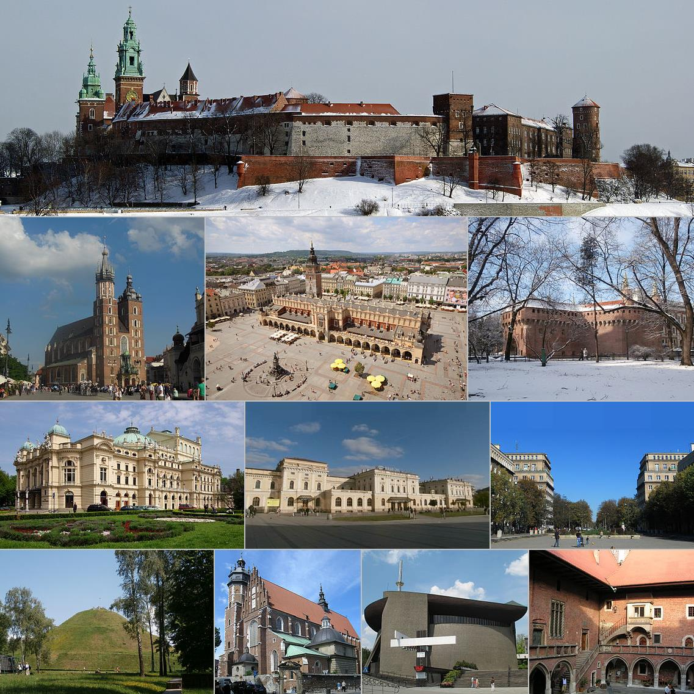

<!DOCTYPE html>
<html lang=”pl”>
</html>
	<head>
		<meta charset=”utf-8”>
		<tittle>Kraków, 3b</tittle>
		<link rel="stylesheet" href="styles.css">
	</head>
	<Body>
		<head>
			<h1>Moje miasto Kraków</h1>
		</head>
		<main>
			<p>
					<b>Kraków</b>, <i>Stołeczne Królewskie Miasto Kraków</i>
				– miasto na prawach powiatu położone w południowej Polsce nad 
				Wisłą, drugie co do liczby mieszkańców. <u>Formalna stolica Polski do 1795 roku</u> 
				i miasto koronacyjne oraz nekropolia królów Polski. Od 1000 roku nieprzerwanie 
				stolica diecezji krakowskiej (jednej z pięciu w ówczesnej Polsce), a od 1925 
				archidiecezji i metropolii. Lokowany przed 1228 rokiem, ponownie w 1257 r.
			</p>
			<hr>
			<h2>Wierszyk o Krakowie – Jedziemy do Krakowa!</h2>
			<P>
				Dziś jedziemy do Krakowa<br>
				Każda dama już gotowa<br>
				By zobaczyć go od nowa<br>
				Znów jedziemy do Krakowa<br>
				<br>
				Kamieniczek tu jest wiele<br>
				Piękne parki przy kościele<br>
				Miejsce spotkań co niedzielę<br>
				Kamieniczek tu jest wiele!<br>
				<br>
				A na rynku zamieszanie<br>
				Sprzedawanie, handlowanie<br>
				Oglądanie i zwiedzanie<br>
				Tu na rynku zamieszanie!<br>
				<br>
				Smok wawelski zieje ogniem<br>
				Wszyscy cieszą się przechodnie<br>
				Spacerują więc swobodnie<br>
				Smok wawelski zieje ogniem!<br>
				<i>Kalina Rokosz</i><br>
				<a href="https://muzycznakurtyna.pl/wierszyk/jedziemy-do-krakowa-wierszyk-o-krakowie/">Pełna wersja wiersza o krarowie, kliknij tutaj</a>
				
			</P class="wiersz">
				<figure>
					
					<figcaption>Ciekawe Miejsca Krakowie!</figcaption>
				</figure>
			<ul>
				<li>Mapa</li>
				<li>Parki</li>
				<li>Zabytki</li>
				<li>Sport</li>
			</ul>
			
			<ol>
				<li>Mapa</li>
				<li>Parki</li>
				<li>Zabytki</li>
				<li>Sport</li>
			</ol>
			<table border=1>
				<tr>
					<th>Nazwa Rezerwatu</th> 
					<th> Powierzchia </th>
					<th> Przedmiot Ochorny</th>
				</tr>
				<tr>
					<td>Bielańskie Skałki</td> 
					<td>1,73 ha</td>
					<td> Spontanieczne procesy sukcesji biocenoz leśnych na skalistym, dawnej pozbawionym lasu terenie</td>
				</tr>
				<tr>
					<td>Bonarka</td> 
					<td> 2,29 ha</td>
					<td> Rezerwat geogoliczny, uskoki geologiczno-tektoniczne, powierzchnie abrazyjne, odsłonięte utwory jurajskie, kredowe i trzeciorzędowe</td>
				</tr>
				Źródło: <a href=”https://pl.wikipedia.org/wiki/Krak%C3%B3w” target=”blank”>Wikipedia</a>

			</table>
		</main>
		<footer>
			<p>
				x<sub>1</sub> + x<sub>2</sub> = 1000<br>
				Lekcja trwa: 14<sup>05</sup> - 14<sup>50</sup>
			</p>
			<p>
				copryight &copy; klasa2b2 Taras Tymitkiv
			</p>
		</footer>
	</Body>
</html>